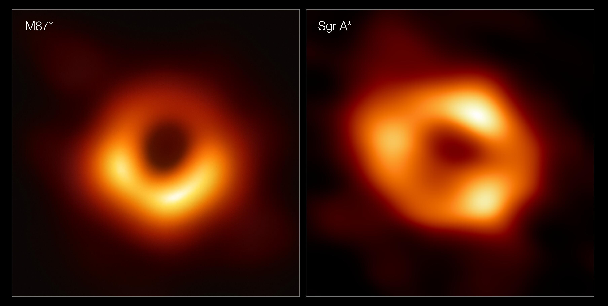

Чёрная дыра — это область пространства-времени, гравитационное притяжение которой настолько велико, что ничто, даже свет, не может покинуть её пределы.
Несмотря на своё название, чёрные дыры не являются обычными пустотами или отверстиями в космосе. Это реальные астрономические объекты, обладающие огромной массой, сосредоточенной в чрезвычайно малом объёме пространства.
Чёрные дыры не излучают свет так, как звёзды, поэтому непосредственно увидеть их невозможно. Однако учёные научились обнаруживать их по влиянию на окружающее пространство, звёзды и газ.

Один из основных способов образования чёрных дыр связан с жизненным циклом массивных звёзд. На протяжении миллионов лет внутри звезды происходят термоядерные реакции, благодаря которым она выделяет огромное количество энергии.
Когда топливо в ядре массивной звезды заканчивается, она больше не может поддерживать равновесие между внутренним давлением и гравитацией. Ядро начинает сжиматься под действием собственной массы. В определённых условиях это приводит к образованию чёрной дыры.
Существуют и другие механизмы: например, чёрные дыры могут возникать в результате слияния уже существующих чёрных дыр.
Одной из главных особенностей чёрной дыры является горизонт событий. Так называют условную границу, окружающую чёрную дыру. Всё, что пересекает эту границу, уже не может вернуться обратно во внешнюю часть Вселенной.
Даже свет не способен преодолеть гравитацию чёрной дыры после пересечения горизонта событий. Именно поэтому чёрная дыра кажется абсолютно чёрной: никакой свет из-за этой границы не может достичь наблюдателя.
При этом сам горизонт событий не является твёрдой поверхностью. Если бы человек мог безопасно приблизиться к достаточно большой чёрной дыре, он не обязательно заметил бы момент пересечения этой границы.
Внутреннее устройство чёрных дыр остаётся одной из самых сложных загадок современной физики. Учёные не могут непосредственно наблюдать то, что происходит за горизонтом событий, поэтому многие выводы основаны на математических моделях и теоретических исследованиях.
Согласно общей теории относительности Альберта Эйнштейна, в центре чёрной дыры находится область, которую называют сингулярностью. В классической теории это точка, в которой плотность вещества становится бесконечной, а привычные законы физики перестают давать точное описание происходящего.
Однако учёные пока не знают, действительно ли сингулярность существует именно в таком виде. Для полного понимания внутреннего устройства чёрных дыр необходима теория, которая объединит общую теорию относительности и квантовую физику.
Чёрные дыры различаются прежде всего по своей массе. Учёные выделяют несколько основных типов, каждый из которых имеет свои особенности.
Звёздные чёрные дыры образуются в результате гравитационного коллапса массивных звёзд. Их масса обычно в несколько или десятки раз превышает массу Солнца. Такие объекты встречаются в нашей Галактике и за её пределами.
Сверхмассивные чёрные дыры обладают массой от миллионов до миллиардов масс Солнца. Они находятся в центрах многих крупных галактик. Например, в центре Млечного Пути расположена сверхмассивная чёрная дыра Стрелец A*.
Чёрные дыры промежуточной массы занимают промежуточное положение между звёздными и сверхмассивными. Их существование долгое время было трудно подтвердить наблюдениями, однако астрономы обнаруживают всё больше свидетельств существования таких объектов.
Также учёные рассматривают возможность существования первичных чёрных дыр, которые могли возникнуть ещё в ранней Вселенной, вскоре после Большого взрыва. Пока их существование не подтверждено.
Несмотря на то что чёрные дыры невозможно увидеть непосредственно, астрономы научились обнаруживать их по воздействию на окружающие объекты и излучение. Существует несколько основных способов их изучения.
Наблюдение за звёздами. Если рядом с невидимым массивным объектом находится звезда, она может двигаться по необычной орбите. Изучая её движение, учёные определяют массу невидимого объекта и могут установить, что перед ними находится чёрная дыра.
Аккреционный диск. Газ и пыль, притягиваемые чёрной дырой, могут образовывать вращающийся вокруг неё диск. Из-за трения и других физических процессов вещество сильно нагревается и начинает излучать, в том числе рентгеновские лучи. Именно это излучение могут регистрировать телескопы.
Гравитационные волны. Когда две чёрные дыры сближаются и сливаются, они создают колебания пространства-времени, которые называются гравитационными волнами. Специальные детекторы, например LIGO и Virgo, способны регистрировать эти чрезвычайно слабые сигналы.
Благодаря этим методам астрономы могут изучать даже те объекты, которые сами по себе остаются невидимыми для обычных телескопов.
Некоторые чёрные дыры получили особую известность благодаря своим размерам, расположению или научным открытиям, связанным с ними.
Стрелец A*. Это сверхмассивная чёрная дыра, расположенная в центре нашей Галактики — Млечного Пути. Её масса примерно в четыре миллиона раз превышает массу Солнца. В 2022 году учёные получили первое изображение её тени, окружённой ярким излучением горячего газа.
M87*. Эта сверхмассивная чёрная дыра находится в центре галактики Messier 87, расположенной примерно в 55 миллионах световых лет от Земли. В 2019 году международная команда проекта Event Horizon Telescope представила первое в истории изображение тени чёрной дыры.
Cygnus X-1. Это одна из наиболее известных звёздных чёрных дыр. Она находится в созвездии Лебедя и входит в двойную систему со звездой-компаньоном. Изучение этой системы помогло учёным лучше понять свойства чёрных дыр звёздной массы.
Чёрные дыры — не просто необычные космические объекты. Их изучение помогает учёным проверять фундаментальные законы физики и лучше понимать, как устроена Вселенная.
Наблюдения за чёрными дырами позволяют исследовать поведение материи в экстремальных условиях, проверять предсказания общей теории относительности и изучать процессы, происходящие в центрах галактик.
Несмотря на огромный прогресс последних десятилетий, многие вопросы остаются открытыми. Учёные продолжают исследовать природу сингулярностей, происхождение сверхмассивных чёрных дыр и процессы, происходящие за горизонтом событий.
Возможно, именно изучение этих загадочных объектов однажды поможет нам приблизиться к пониманию самых фундаментальных законов мироздания.
Чёрные дыры — одни из самых загадочных объектов во Вселенной. Их гравитация настолько сильна, что даже свет не может покинуть их пределы.